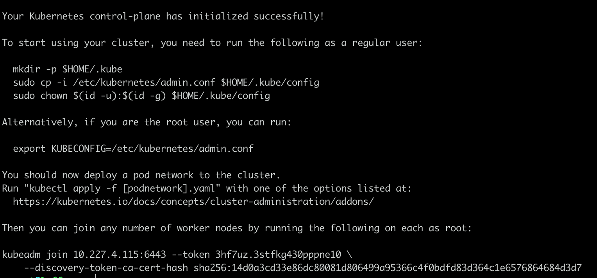
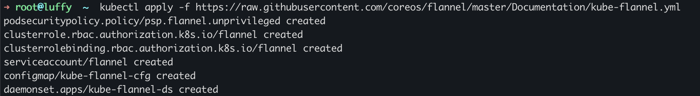

Airren Ren
Monday, January 1, 1
「K8s」Kubernates 安装
环境准备
K8s 只能基于Linux环境部署，用Win/Mac的小伙伴们怎么在自己的PC上Setup环境呢。此时就推荐Canonical家的Multipass了，Canonical 是谁，当然是Ubuntu的母公司了。
安装 kubelet kubeadm kubectl
1sudo apt-get update && sudo apt-get install -y apt-transport-https curl
2curl -s https://packages.cloud.google.com/apt/doc/apt-key.gpg | sudo apt-key add -
3cat <<EOF | sudo tee /etc/apt/sources.list.d/kubernetes.list
4deb https://apt.kubernetes.io/ kubernetes-xenial main
5EOF
6sudo apt-get update
7sudo apt-get install -y kubelet kubeadm kubectl
8sudo apt-mark hold kubelet kubeadm kubectl # 设置为不再更新
初始化
1swapoff -a
2kubeadm init ctl
3# kubeadm config images pull --v=10
4 # 国内正常网络不能从k8s.grc.io拉取镜像, 所以从docker.io拉取, 然后重新打上一个符合k8s的tag:
5docker pull registry.cn-hangzhou.aliyuncs.com/google_containers/kube-apiserver:v1.20.1
6docker tag registry.cn-hangzhou.aliyuncs.com/google_containers/kube-apiserver:v1.20.1 k8s.gcr.io/kube-apiserver:v1.20.1
7
8docker pull mirrorgooglecontainers/kube-apiserver:v1.12.2
9docker pull mirrorgooglecontainers/kube-controller-manager:v1.12.2
10docker pull mirrorgooglecontainers/kube-scheduler:v1.12.2
11docker pull mirrorgooglecontainers/kube-proxy:v1.12.2
12docker pull mirrorgooglecontainers/pause:3.1
13docker pull mirrorgooglecontainers/etcd:3.2.24
14docker pull coredns/coredns:1.2.2
15
16docker tag docker.io/mirrorgooglecontainers/kube-apiserver:v1.12.2 k8s.gcr.io/kube-apiserver:v1.12.2
17docker tag docker.io/mirrorgooglecontainers/kube-controller-manager:v1.12.2 k8s.gcr.io/kube-controller-manager:v1.12.2
18docker tag docker.io/mirrorgooglecontainers/kube-scheduler:v1.12.2 k8s.gcr.io/kube-scheduler:v1.12.2
19docker tag docker.io/mirrorgooglecontainers/kube-proxy:v1.12.2 k8s.gcr.io/kube-proxy:v1.12.2
20docker tag docker.io/mirrorgooglecontainers/pause:3.1 k8s.gcr.io/pause:3.1
21docker tag docker.io/mirrorgooglecontainers/etcd:3.2.24 k8s.gcr.io/etcd:3.2.24
22docker tag docker.io/coredns/coredns:1.2.2 k8s.gcr.io/coredns:1.2.2
23
24docker rmi mirrorgooglecontainers/kube-apiserver:v1.12.2
25docker rmi mirrorgooglecontainers/kube-controller-manager:v1.12.2
26docker rmi mirrorgooglecontainers/kube-scheduler:v1.12.2
27docker rmi mirrorgooglecontainers/kube-proxy:v1.12.2
28docker rmi mirrorgooglecontainers/pause:3.1
29docker rmi mirrorgooglecontainers/etcd:3.2.24
30docker rmi coredns/coredns:1.2.2
安装成功

1Your Kubernetes control-plane has initialized successfully!
2
3To start using your cluster, you need to run the following as a regular user:
4
5 mkdir -p $HOME/.kube
6 sudo cp -i /etc/kubernetes/admin.conf $HOME/.kube/config
7 sudo chown $(id -u):$(id -g) $HOME/.kube/config
8
9Alternatively, if you are the root user, you can run:
10
11 export KUBECONFIG=/etc/kubernetes/admin.conf
12
13You should now deploy a pod network to the cluster.
14Run "kubectl apply -f [podnetwork].yaml" with one of the options listed at:
15 https://kubernetes.io/docs/concepts/cluster-administration/addons/
16
17Then you can join any number of worker nodes by running the following on each as root:
18
19kubeadm join 10.227.4.115:6443 --token 3hf7uz.3stfkg430pppne10 \
20 --discovery-token-ca-cert-hash sha256:14d0a3cd33e86dc80081d806499a95366c4f0bdfd83d364c1e6576864684d3d7
安装网络组件
1# sysctl net.bridge.bridge-nf-call-iptables=1
2# https://kubernetes.io/docs/concepts/cluster-administration/addons/
3kubectl apply -f "https://cloud.weave.works/k8s/net?k8s-version=$(kubectl version | base64 | tr -d '\n')"

检查集群状态
1kubectl get nodes
2kubectl get pod --all-namespaces -o wide
3kubectl get pod --all-namespaces
4kubectl get pods -n kube-system # 指定命名空间

参考文档
概念
http://www.dockone.io/article/932
https://www.zhihu.com/question/37498459/answer/826736487
安装文档
https://kubernetes.io/zh/docs/setup/production-environment/tools/kubeadm/install-kubeadm/
https://www.hangge.com/blog/cache/detail_2414.html
https://zhuanlan.zhihu.com/p/46341911
init ubuntu as a k8s node
1sudo su
2apt update && apt -y upgrade
3apt install -y apt-transport-https curl net-tools
4curl -fsSLo /usr/share/keyrings/kubernetes-archive-keyring.gpg https://packages.cloud.google.com/apt/doc/apt-key.gpg
5echo "deb [signed-by=/usr/share/keyrings/kubernetes-archive-keyring.gpg] https://apt.kubernetes.io/ kubernetes-xenial main" | sudo tee /etc/apt/sources.list.d/kubernetes.list
6apt update
7apt install -y kubelet kubeadm kubectl docker.io
How completely uninstall kubernetes
1#!/bin/sh
2# Kube Admin Reset
3kubeadm reset
4
5# Remove all packages related to Kubernetes
6apt remove -y kubeadm kubectl kubelet kubernetes-cni
7apt purge -y kube*
8
9# Remove docker containers/ images ( optional if using docker)
10docker image prune -a
11systemctl restart docker
12apt purge -y docker-engine docker docker.io docker-ce docker-ce-cli containerd containerd.io runc --allow-change-held-packages
13
14# Remove parts
15
16apt autoremove -y
17
18# Remove all folder associated to kubernetes, etcd, and docker
19rm -rf ~/.kube
20rm -rf /etc/cni /etc/kubernetes /var/lib/dockershim /var/lib/etcd /var/lib/kubelet /var/lib/etcd2/ /var/run/kubernetes ~/.kube/*
21rm -rf /var/lib/docker /etc/docker /var/run/docker.sock
22rm -f /etc/apparmor.d/docker /etc/systemd/system/etcd*
23
24# Delete docker group (optional)
25groupdel docker
26
27# Clear the iptables
28iptables -F && iptables -X
29iptables -t nat -F && iptables -t nat -X
30iptables -t raw -F && iptables -t raw -X
31iptables -t mangle -F && iptables -t mangle -X